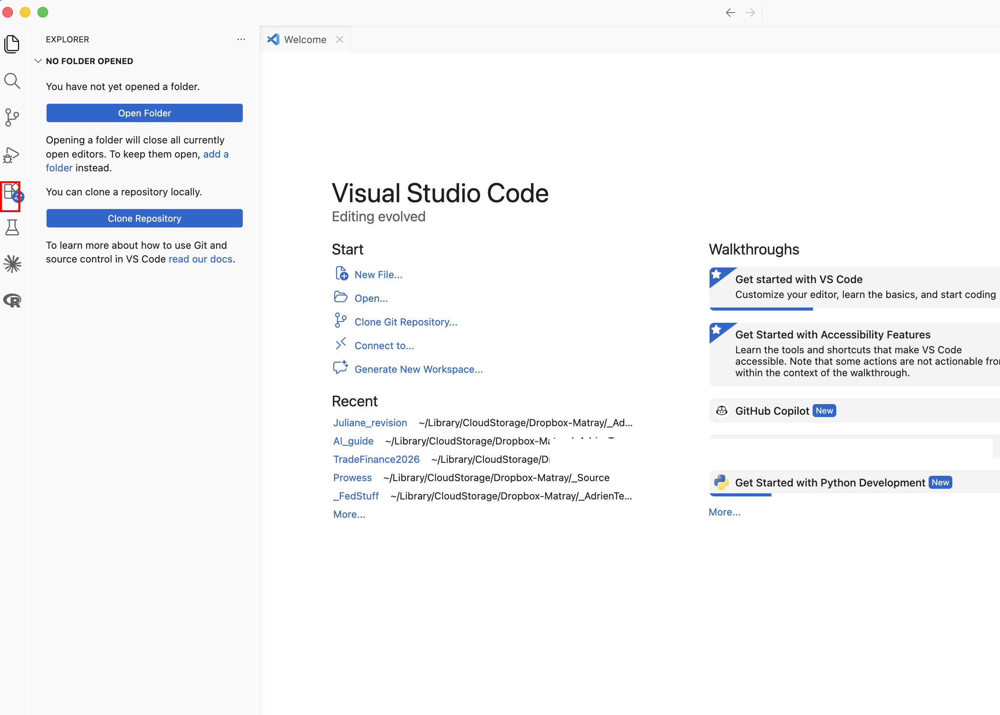
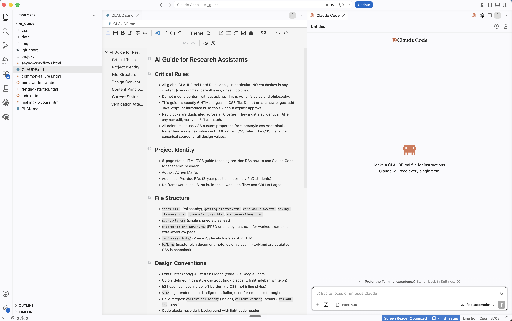

Getting Started
Installation, the three-panel workflow, and your first conversation with Claude Code.
This page gets you from zero to a working Claude Code installation. By the end, you will have run your first conversation and understood what happened under the hood.
Prerequisites
You need three things installed before proceeding:
- macOS or Linux (Claude Code runs in a Unix terminal)
- VS Code (your code editor; download from code.visualstudio.com)
- Git (version control; run
git --versionin a terminal. If macOS prompts you to install Xcode Command Line Tools, accept.)
You do not need to know how to use a terminal. You need to know how to open one. In VS Code: Ctrl+` (backtick), or from the menu: Terminal > New Terminal. That is it. Once the terminal is open, you type claude and from that point on you are talking to Claude Code, not the terminal.
Installing Claude Code
Open a terminal (in VS Code or standalone) and run:
npm install -g @anthropic-ai/claude-codeOnce installed, navigate to any project folder and start Claude Code:
cd ~/your-project-folder
claudeThe first time you run claude, it will ask you to authenticate with your Anthropic account. Follow the prompts in your browser.
VS Code: Your Starting Point
When you first open VS Code, you see the Welcome screen. On the left is the Explorer sidebar (currently empty because no folder is open). In the center, you see options to open a folder, clone a repository, and your recent projects.

Before you can use Claude Code, you need to install it. Click the Extensions icon in the left sidebar (highlighted in red above), search for "Claude Code," and install it. Once installed, you will see a small Claude icon appear in your left sidebar.
Open your project folder
This is the single most important thing to understand about VS Code. When you click "Open Folder" and select a project directory, VS Code works inside that folder. Everything you see in the Explorer sidebar (the file tree on the left) is the contents of that folder. And Claude Code can read and edit anything inside that folder, but nothing outside it.
This is why you always start by opening the right folder. If you are working on a project that lives in ~/Dropbox/my-project/, open that folder. Claude will see all the data, code, and output files inside it. If you open the wrong folder (or no folder at all), Claude is working blind.
Using Claude Code
With the extension installed and a folder open, click the Claude icon in the left sidebar. A conversation panel opens on the right. You type your message at the bottom, and Claude's responses appear above. When Claude wants to run a command or edit a file, it asks for your permission first. You can accept, reject, or modify.

Your screen has three panels. On the left, the Explorer shows the full folder tree of your project: every subfolder, every file. In the center, the editor is where you view and edit documents. VS Code can display many file types natively: Markdown, CSV, plain text, and more. For others (PDF, Excel, Word), you may need a small extension. Click the Extensions icon in the left sidebar (the same place you installed Claude Code), search for the file type you need (for example, "PDF viewer" or "Excel viewer"), and install. On the right, the Claude Code panel is where you have your conversation.
Just Ask, in Practice
Recall the principle: you do not need to craft a perfect prompt. Here are real examples of first messages that work perfectly well:
- "I have a CSV in this folder and I don't know what's in it. Can you look at it?"
- "Here's an error I'm getting" (paste the error or a screenshot)
- "What files are in this project and what do they do?"
- "How do I save this conversation to continue later?"
All of these are fine. Claude Code will figure out what you mean. The barrier to asking should be zero.
"As an expert data analyst, please examine the CSV file located at ./data/raw/survey_results.csv and provide a comprehensive summary of its schema, data types, missing value patterns, and potential quality issues, formatted as a structured report."
"Can you look at the CSV in data/raw/ and tell me what's in it?"
Both get you the same result. The second one took three seconds to type.
Managing Conversations
From the Philosophy page, you know conversations degrade over time. Here are the practical mechanics:
/clear: resets the conversation. Claude forgets everything from this session./compact: compresses the conversation into a summary, freeing up context space without fully resetting./context: shows how much of the context window you have used so far.- Starting a new terminal session gives you a completely fresh start.
You do not always need to do this manually. Claude Code has memory across sessions: it can recall prior conversations, remember decisions you made, and pick up context from previous work. If you start a new conversation and say "we were working on the merge script yesterday," it will often know what you mean. The handoff trick is your safety net for when you need a clean, reliable transfer. But in practice, Claude Code is better at continuity than you might expect.
Costs and Limits
Claude Code uses tokens (roughly: words processed). Longer conversations consume more tokens, which cost money. Your subscription runs through my account, so please be mindful.
If you hit a rate limit, that is your signal to clear and restart with focused context. Do not waste tokens on rambling, unfocused conversations. A clear question in a fresh context is both cheaper and produces better results than a vague question buried in a long thread.
Your First Conversation
Try this as your first task. Navigate to a project folder you already know well (one where you know what the files are), then start Claude Code:
cd ~/path/to/a/project/you/know
claudeThen type:
What is in this project? Describe the file structure and what each file does.Watch what happens. Claude Code will read your files and describe the project. Now comes the important part.
Understanding What Just Happened
Claude Code just read your files and produced a description. Before you move on, verify it:
- Did it identify the right files? Check against what you see in the file tree.
- Did it describe them accurately? You know this project; you can tell if it is wrong.
- Did it miss anything? Important files it skipped or mischaracterized?
- Did it make anything up? Files that do not exist, functions it invented?
This is why we chose a project you already know. You have the ground truth. You can verify every claim. This is the verification mindset in practice: start with tasks where you can check the output, so you build the habit before working on tasks where checking is harder.
You are ready for the core workflow: plan, review, execute, verify.